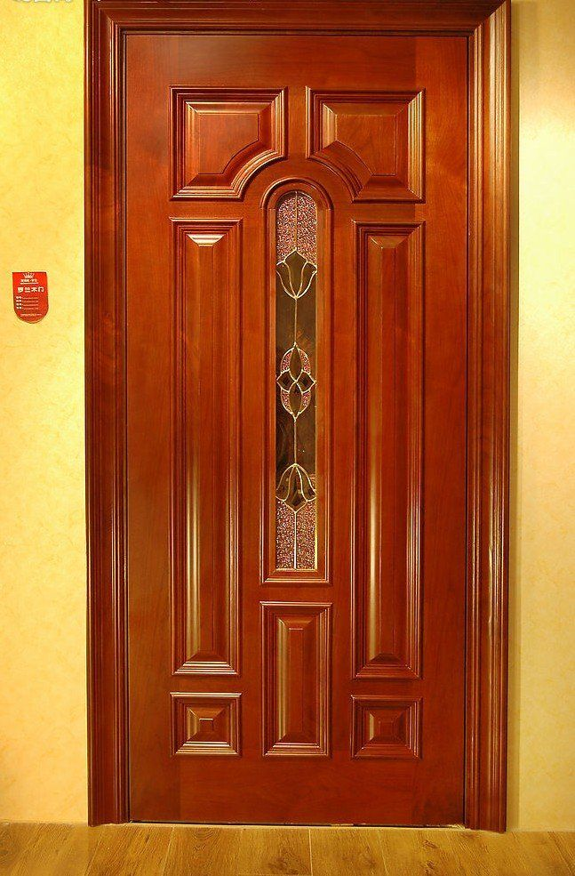
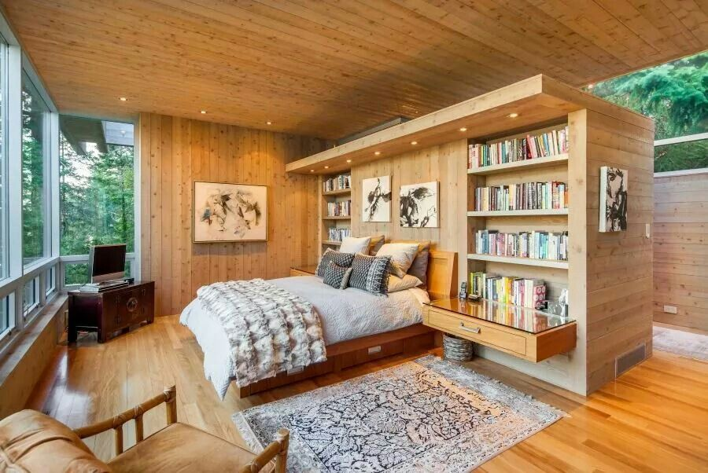
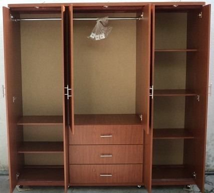

La mejor madera al mejor precioLa mejor madera al mejor precio
La mejor madera al mejor precioLa mejor madera al mejor precioEn Carpintería trabajamos con distintos tipos de maderas; maderas macizas y derivados de la madera (tablas, tableros de aglomerado, contrachapados, alta densidad… ). Las maderas macizas proceden directamente del tronco de los árboles; son piezas íntegras compuestas exclusivamente de madera. Al ser un material natural, es obvio que su precio y calidad son superiores.
Los carpinteros son profesionales que tienen la capacidad de realizar numerosas tareas, entre las que se encuentran por ejemplo, la reparación de mesas cojas, puertas que no cierran correctamente etc., además ayudan a cambiar los muebles que se pueden tener en las diferentes habitaciones de un inmueble (cocina, baño, habitaciones y/o comedor, etc.).

Cocinas de madera
Puertas de madera
Cuartos
Roperos